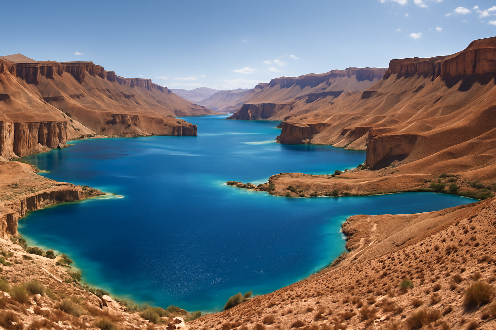
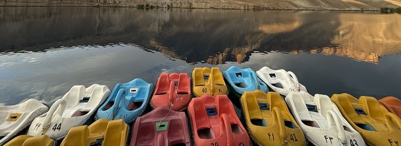

Band-E Amir, establish in 2009, is Afghanistan's first national park, a pristine
natural wonder located high in the Hindu Kush mountains of Bamyan Province.
The park is renowned for a chain of six intensely blue, deep lakes ser against the
arid, rugged desert landscape.
This contrast often reffered to as Afghanistan's Grand canyon or Asure Jewel.


Band-E Amir Haibat, The largest and deepest of the six lakes
Unique Geological Formation
The breathtaking blue color is not merely a reflection, but a result of the unique geology.
The lakes were fromed by minersal-rich wate seeping out of faults and fractures in the limestone bedrock.
Over millenia, this process deposited layers of harden **Calcium carbonate (Travertine)**, creating the natural,
dam-like walls that separate the lakes.
This Travertine system is one of the few rare exmaples of its kind in the world.
Conservation and Tourism
Situated at an altitude of approximately 2900 meters(9,500 ft), Band-e Amir attracts thousands of
local and foriegn tourists annually, primary in the summer months.
The park is overseen by rangers and supported by organizations like WildLife Conservation Scoiety (WCS)
to promot ecotourism and protect its fragile hig-altitude ecosystem.
Plan your Adventure
Sign up to recieve our essential pre-trip checklist and montly updates on seasonal conditions and travel advisories.
Key Travel Facts
**Best Time to visit:** May to September (Summer offers the best weather for baoting and hiking).
The Six Jewels: Names and Significance
The six main lakes are fromed by natural Travertine dams that cascade into one another.
Each name histroical or mythical roots, often related to Imam Ali, The fourth caliph of Islam.
reflecting the site's spirtual importance.
Names of the six Lakes (Band-E Amir)
Band-E Haibat:The largest and deepest lake, known for its intense blue color
and the shrine overlooking its shores.
Band-E Zulfiqar:Name after Imam Ali's legendary sword, this is a long, narrow lake.
Band-E Gholaman:Meaning 'Lake of Servant's , it is one of the higher like in the chain.
Band-E Panir:The Lake of cheese is the smallest and shallowest, named for the whitish color of its high-mineral banks.
Band-E Qambar: Named after loyal companion of Imam Ali.
Band-E Pudina:The lake of Mint often recogonized for the clearwater flowinf obe its Travertine dam.
The Natural Travertine Dams are formed by calcium carbonate desposits.
The water's color
The Striking, almost unnatural blue and turquoise colors are caused by the deposition of **calcium cabonate**
(limestone) on the lakes beds and the **Scattering of light** by suspended minerals in the water, a phenomenon that
changes subtly throughough the day.
Species Adpated to the Hindu Kush
The par is a vital protected area for a variety of species adpated to the challening, high-altitude
desert climate, whic includes extrem cold in winter.
Key Wildlife Species
Species
Status/Adaptation
Habitat/Role
Snow Leopard(Panthera Unica)
Vulnerable/Endagered
The elusive top predtor ; its presence indicates a healthy ecosystem
Siberian ibx(Capra sibirica)
Common in the park
Wild mountain goat, often seen scaling the sheer cliffs and rocky slopes.
Uril/wild sheep(Ovis ammo)
Protect within park boundaries
Grazing mammal found in the rugged higlands and steppes.
Golden Eagle(Aquila chryseatos)
Apex Avian Predator
Soars over the canyons, hunting small mammals like marmots and pikas
Flora nd Ecosystem
Vegetation is sparse, dominated by hardy **Artemisia-dominated rnagelands** and shrubs that support
the gazing wildlife.
The eniter area is recogonized as an **important Bird Area (IBA)*** due to its support for Species like
the Himalayn Snowcock and Hume's Larks
Media Resources of the park
Experince the tranquinlity and scale of Band-E through video and sound, which capture the
stunning contract between the blue water and the dramatic red-brown cliffs.
Ambient Park Sounds
Please listen to a short clipe of the natural sounds from the park such as wind or flowing water.
Photo Gallery Spot
Band-E Hiabit, The largest lakeclear Water over a travertine damBoating on the serne lakesTravertine waterFallPanoramic view of the parkUnique mineral formation